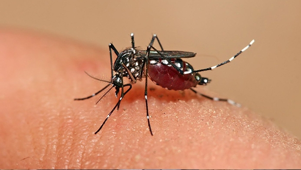

O coronavírus (COVID-19) é uma doença infecciosa causada pelo vírus SARS-CoV-2. A maioria das pessoas que adoece em decorrência da COVID-19 apresenta sintomas leves a moderados e se recupera sem tratamento especial. No entanto, algumas desenvolvem um quadro grave e precisam de atendimento médico.
Coronavírus
A infecção pode ocorrer caso você inale o vírus quando estiver perto de alguém que tenha COVID-19 ou se você tocar em uma superfície contaminada e, em seguida, passar as mãos nos olhos, no nariz ou na boca. O vírus se espalha com mais facilidade em locais fechados e em multidões.
Prevenção
Saber se prevenir é importante para sua saúde, evitando que você possa ser infectado e espalhar o contágio.
Dengue
A dengue é uma doença viral transmitida por mosquitos que nos últimos anos se espalhou rapidamente por todas as regiões da Organização Mundial da Saúde (OMS).
O vírus da dengue é transmitido por mosquitos fêmea, principalmente da espécie Aedes aegypti e, em menor proporção, da espécie Aedes albopictus.
Aedes Aegypti

Não existe tratamento específico contra o vírus da dengue. Tomar muito líquido para evitar desidratação e utilizar medicamentos para baixar a febre e analgésicos são as medidas de rotina para aliviar os sintomas. Pacientes com dengue, ou com suspeita da doença, precisam de assistência médica.
Prevenção
Saber cuidar do meio ambiente, também é saber cuidar da saúde. Não deixe água parada!
Varíola
É uma zoonose viral: uma doença que foi transmitida aos humanos a partir de um vírus que circula entre animais. Antes do atual surto, ocorria principalmente na África Central e Ocidental, sobretudo em regiões perto de florestas, pois os hospedeiros são roedores e macacos.
As complicações que a doença causa é Erupção cutânea ou lesões de pele, infonodos inchados (ínguas), febre, dores no corpo, dor de cabeça, calafrio e fraqueza.
A maneira mais segura de se prevenir contra a varíola dos macacos é evitar o contato direto com pessoas contaminadas, lavar as mãos com água e sabão e recomenda-se o uso de máscara de proteção cobrindo nariz e boca.